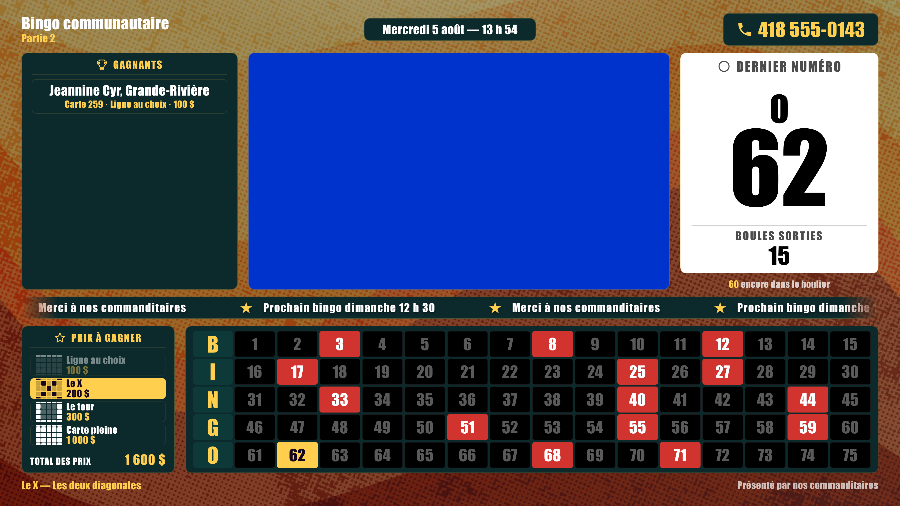
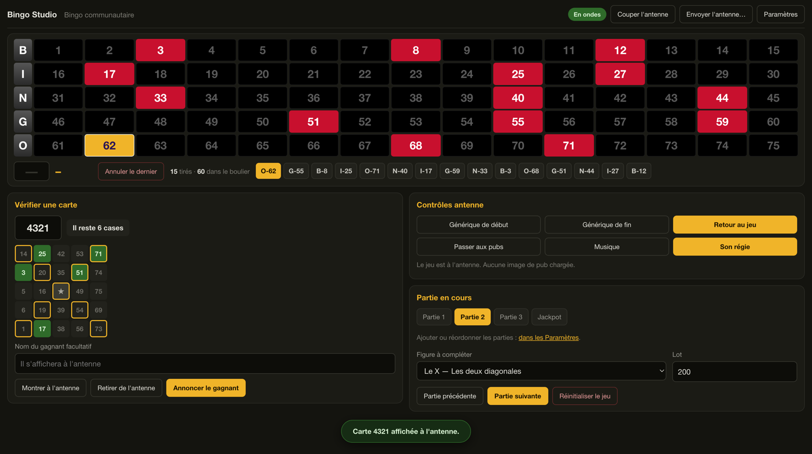
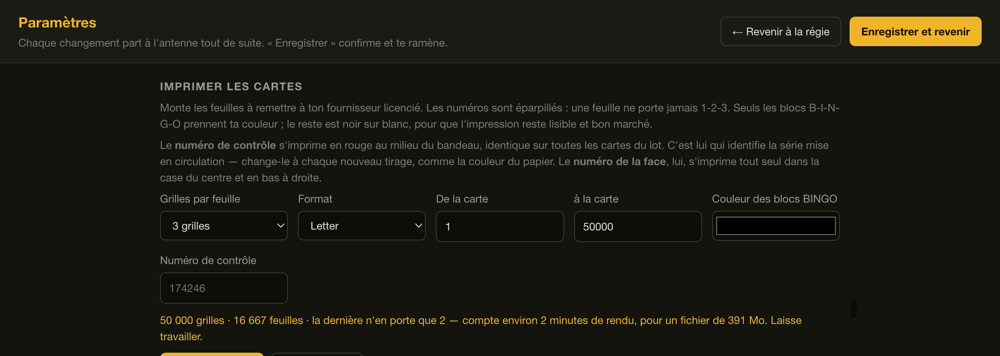

Tes cartes t'appartiennent
La base de 50 000 cartes est livrée avec le logiciel et libre de droits pour les télévisions communautaires autonomes. Tu l'imprimes quand tu veux, en quelle quantité tu veux, et tu vends les cartes à ton profit.
Gratuit · pour les télévisions communautaires autonomes du Québec
Sur le plateau, rien ne change. À l'écran, tout change : un habillage de vraie télé et une carte vérifiée avant que la personne raccroche.
Mac et Windows · français · fonctionne hors ligne, sans abonnement
Essaie-le d'abord, sans rien devoir. Dis-moi ce qui manque ou ce qui cloche. Et le jour où il te sert vraiment, chaque semaine, une contribution volontaire une fois l'an aide à le faire vivre.Le but de cette plateforme n'est pas de te vendre un service dont tu dépendrais ensuite. C'est de mettre ton bingo entre tes mains : ta base de cartes, tes impressions, tes couleurs, tes parties. Sans abonnement, sans compte à ouvrir, sans appeler personne.
La base de 50 000 cartes est livrée avec le logiciel et libre de droits pour les télévisions communautaires autonomes. Tu l'imprimes quand tu veux, en quelle quantité tu veux, et tu vends les cartes à ton profit.
Le PDF sort du logiciel et part chez l'imprimeur de ton choix, dans ta ville. Aucun intermédiaire, aucun délai de commande, aucun fournisseur imposé. Tu choisis le format, le nombre de grilles par feuille et la couleur des blocs.
Ton logo, tes couleurs, tes téléphones, tes commanditaires, tes parties et tes figures. Chaque télé communautaire a sa formule — le logiciel s'adapte à la tienne au lieu de t'imposer la sienne.
Tout tourne sur ta machine, hors ligne. Pas de serveur, pas de connexion obligatoire, rien qui cesse de fonctionner si le site disparaît. Tes réglages s'exportent dans un fichier que tu gardes : le jour où tu changes d'ordinateur, tu le réimportes et tout revient.


Laisse-moi ton courriel et je t'envoie le lien de téléchargement tout de suite. C'est gratuit, et ça le restera.
Pourquoi passer par là plutôt que par un bouton direct ? Pour savoir qui utilise le logiciel, pouvoir te prévenir des mises à jour, et te faire signe une fois l'an. Rien d'autre — pas de publicité, pas de revente, et tu te désabonnes en un clic.
Mac et Windows · français · aucun compte à créer dans le logiciel · fonctionne hors ligne
Deux fenêtres s'ouvrent : la régie, pour toi, et l'antenne, pour le téléviseur.
Bouton « Envoyer l'antenne… » pour la placer en plein écran sur l'écran de ton choix. Avec OBS ou Tricaster, utilise plutôt une source navigateur sur l'adresse indiquée dans les Paramètres. Un fond transparent est disponible pour incruster par-dessus le plateau.
Logo, couleurs de fond, couleur d'incrustation, téléphone, commanditaire, bandeau défilant, sons, génériques. Tes réglages et tes parties sont conservés d'une semaine à l'autre.
Quand c'est à ton goût, exporte le tout dans un fichier et garde-le de côté. Le jour où tu changes d'ordinateur, tu le réimportes et l'habillage revient au complet, médias inclus — rien à refaire.
Onze figures — ligne, colonne, diagonale, X, quatre coins, T, L, H, le tour, carte pleine… Ajoute, renomme, réordonne : chaque télé communautaire a sa formule.
Paramètres → Imprimer les cartes. Tu choisis le nombre de grilles par feuille, le format, la tranche de la base et la teinte du papier ; le logiciel produit le PDF à envoyer à l'imprimeur. Ça se fait une fois, longtemps d'avance.
Chaque boule sortie du boulier, un clic. Un appel arrive : tu tapes le numéro de carte, le verdict s'affiche, tu peux montrer la carte à l'antenne et annoncer le gagnant.
Parties, figures, lots, gagnants avec l'heure, et tous les numéros tirés dans l'ordre avec leur horodatage — pour ta Régie et ta comptabilité.
Le logiciel est livré avec une base de 50 000 cartes, numérotées de 1 à 50 000. Elle est libre de droits pour les télévisions communautaires autonomes : imprime-la, vends-la, c'est la tienne. De quoi tenir des années sans jamais réutiliser un numéro de série.
Cette base ne changera jamais. La carte n° 4321 portera les mêmes 24 numéros dans dix ans qu'aujourd'hui, sur toutes les machines et dans toutes les stations. C'est indispensable : tes cartes papier vivent des années en salle, et une base qui bouge rendrait fausses toutes celles déjà vendues.
Ce n'est pas une promesse, c'est vérifié à chaque mise à jour. Le fichier porte une empreinte numérique et un test refuse de passer si un seul octet a bougé.
L'impression se fait dans le logiciel — il n'y a rien à téléverser ici, rien à commander : ta base voyage avec l'application, et c'est elle qui produit le PDF à envoyer à l'imprimeur.
De 1 à 18 grilles par feuille, en Letter, Legal ou A4. Surtout, tu choisis de quel numéro à quel numéro : les cartes 1 à 300 pour le bingo de dimanche, 301 à 600 la semaine d'après. Personne n'imprime 50 000 cartes d'un coup — et le résumé te dit d'avance combien de feuilles sortiront, combien de temps ça prendra et ce que pèsera le fichier.
Tes couleurs : les blocs B-I-N-G-O prennent la teinte de ton choix, une par série si tu veux les distinguer d'un coup d'œil. Le reste reste noir sur blanc — ça s'imprime mieux, ça coûte bien moins cher en encre, et ça se lit de loin.
Les numéros de série sont éparpillés sur l'ensemble du tirage : une feuille ne porte jamais 1-2-3. Personne ne peut deviner ce qu'il achète, et les grilles voisines ne se retrouvent pas dans la même main. À graine égale, la répartition est identique : un lot perdu se réimprime à l'identique.

De nulle part, et c'est voulu. Ils n'ont été achetés, copiés ni repris à personne. Ils ne viennent d'aucun fournisseur de cartes de bingo — ni Bingo Vézina, ni aucun autre. Ils ont été fabriqués par un programme, pour ce logiciel, et ils n'appartiennent à aucune compagnie.
Un générateur de nombres pseudo-aléatoires part d'un mot de départ —
une graine, ici la phrase bingo studio
2026. Cette graine est transformée en un nombre de départ,
puis un algorithme court en tire une suite de nombres. La même
graine redonne toujours exactement la même suite : c'est ce qui rend
la base reproductible.
Pour chaque carte, on pioche dans cette suite : 5 numéros parmi 1-15 pour la colonne B, 5 parmi 16-30 pour le I, 4 parmi 31-45 pour le N (la case du centre est libre), 5 parmi 46-60 pour le G, 5 parmi 61-75 pour le O. Chaque carte est ensuite vérifiée — 24 numéros tous différents, chaque colonne dans sa plage — et comparée à toutes les précédentes pour qu'aucune ne se répète.
Il existe environ 5,5 × 1026 cartes de bingo différentes. Nos 50 000 sont une goutte dans cet océan : deux cartes identiques sont impossibles en pratique.
Personne ne peut te réclamer de droits sur ces cartes. Tu les imprimes, tu les vends, tu en tires tes revenus. Il n'y a ni licence à renouveler, ni fournisseur à qui rendre des comptes.
En revanche, ces numéros ne valent que pour ce logiciel. Le n° 4321 d'ici n'a rien à voir avec le n° 4321 d'un autre fournisseur — ce sont deux grilles de numéros complètement différentes qui portent le même chiffre par hasard.
⚠️ N'utilise jamais ce logiciel pour vérifier des cartes achetées ailleurs. Il afficherait une grille qui n'est pas celle que la personne a en main, et donnerait un mauvais verdict en ondes. Les cartes que tu vérifies doivent venir du PDF produit par le logiciel — c'est tout.
Besoin de plus de 50 000 numéros de série ? C'est déjà large — mais si ta station en écoule davantage, ou veut repartir sur une série neuve, écris-moi et je produis une base à ta taille. Elle sera scellée comme celle-ci, et elle ne bougera plus jamais non plus. Me joindre.
Bingo Studio ne tire jamais les numéros. C'est ton boulier, filmé, qui les tire ; l'opératrice saisit ce qui sort. Le logiciel affiche et vérifie — il ne conduit aucun jeu de hasard.
Ce n'est pas un détail technique. Au Canada, le Code criminel (art. 207(4)(c)) exclut les jeux « exploités au moyen d'un ordinateur » des licences accordées aux organismes de charité : seul l'État provincial peut exploiter un bingo joué en ligne. Un bingo télé à cartes papier, lui, relève d'une licence ordinaire — au Québec, le bingo média de la Régie des alcools, des courses et des jeux.
Chaque organisme demeure responsable d'obtenir et de respecter sa propre licence auprès de l'autorité de sa province. Bingo Studio est un outil, pas un avis juridique.
Bingo Studio ne se vend pas. Aucune licence, aucun abonnement, aucune fonction bloquée : tu as le logiciel en entier, pour toujours.
Télécharge-le, fais-le tourner sur un vrai bingo, vois s'il tient la route en ondes. Tu ne dois rien à personne pendant ce temps-là.
Ce qui manque, ce qui cloche, ce qui ne fonctionne pas comme dans ta station. C'est comme ça que le logiciel s'améliore — et ça m'intéresse autant qu'une contribution.
Le jour où tu l'utilises pour de bon, semaine après semaine, une contribution volontaire une fois par année, du montant que tu juges juste. Pas avant.
Je t'écrirai une fois l'an pour te le rappeler, avec les nouveautés de l'année. Une fois l'an, pas plus. Et si une année tu ne peux pas, ça ne change rien : le logiciel continue de fonctionner, tu reçois les mises à jour, et je ne te relancerai pas.
La contribution se fait sur Ko-fi, en quelques secondes, sans créer de compte.
Bingo Studio est déjà très souple — figures, parties, habillage, incrustation, pubs, génériques. Mais chaque télé communautaire a ses habitudes, et il arrive qu'on ait besoin de plus : une formule de jeu particulière, un habillage aux couleurs de la station, une intégration à votre chaîne technique, une reprise de vos propres cartes.
Ça, ça se discute. Écris-moi et on regarde ce dont vous avez besoin — c'est du développement sur mesure, et donc une entente d'affaires.